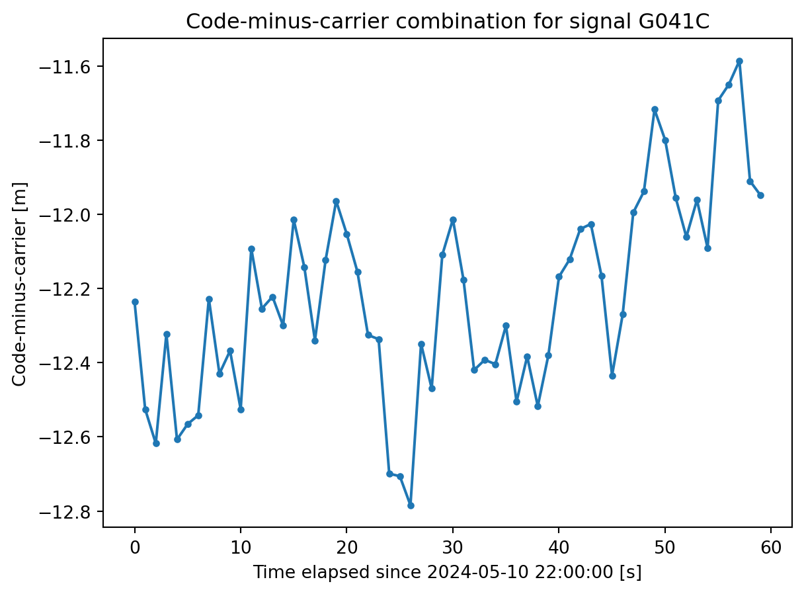
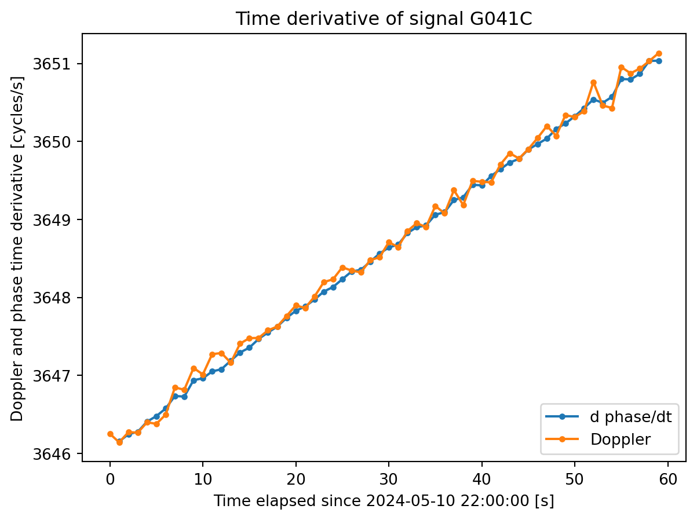
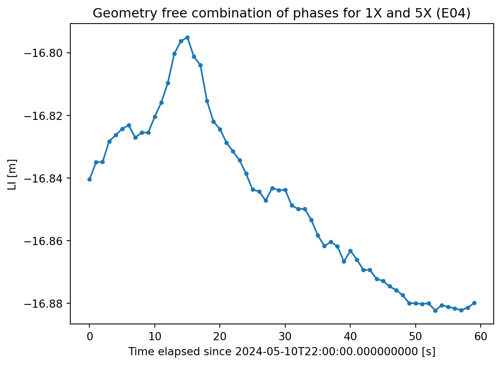

Using Apache parquet to store and process GNSS measurements
Leverage Apache parquet to store and exchange GNSS measurement, usually stored in RINEX (text-based) format. This format can be quickly loaded in data structures such as pandasDataFrame for efficient data manipulation and processing.
GNSS
English
Published
November 25, 2024
Following up on a previous idea regarding the sheer volume of the GNSS measurements generated by CORS1 networks, this post explores a potential binary storage of GNSS measurements (rather than text) leveraging the Apache parquet format. This format is highly used in Artificial Intelligence and Machine Learning applications, which is being also adopted in GNSS for e.g. prediction of precise product (orbits and clocks), see also Siemuri et al. (2022) or Mao et al. (2024). By transitioning from text-based storage to a binary format like Parquet, we can unlock significant speed improvements in GNSS data processing pipelines, eliminating the need for time-consuming text parsing.
From this post, you can expect the following:
Convert RINEX observable files to binary Parquet using the Python roktools library.
Explore a first draft of potential columns for the GNSS Parquet files
Some basic maniupation tips for basic GNSS measurement processing
Converting RINEX to parquet
Converting RINEX files to the Parquet format involves a two-step process:
Parsing the RINEX data: We leverage the roktools library to efficiently parse the RINEX file and organize the data into a structured format.
Storage with pandas: Once parsed, the data is seamlessly converted into a pandasDataFrame. Pandas, a popular Python library for data manipulation, offers a built-in function for writing DataFrames directly to Parquet format.
This approach simplifies the conversion process and is shown in the code snippet below:
import tempfileimport pandas as pdfrom roktools import rinex# we use Context Manager to store the parquet file in a# temporary file that will be cleaned up automatically# after loading itwith tempfile.NamedTemporaryFile() as fh: rinex.to_parquet(['SUN600SWE_S_20241312200_01M_01S_MO.rnx'], output_filename=fh.name)# Rewind temporary file fh.seek(0)# Load the parquet file into a DataFrame df = pd.read_parquet(fh.name)# Print preview of the DataFramedf.head()
epoch
constellation
sat
channel
signal
range
phase
doppler
snr
slip
station
0
2024-05-10 22:00:00
G
G04
1C
G041C
2.462384e+07
1.293992e+08
-3646.251
35.0
0
sun6
1
2024-05-10 22:00:00
G
G04
2W
G042W
2.462385e+07
1.008308e+08
NaN
20.0
0
sun6
2
2024-05-10 22:00:00
G
G04
2X
G042X
2.462385e+07
1.008308e+08
NaN
41.0
0
sun6
3
2024-05-10 22:00:00
G
G04
5X
G045X
2.462385e+07
9.662954e+07
NaN
45.0
0
sun6
4
2024-05-10 22:00:00
G
G04
1X
G041X
2.462384e+07
1.293995e+08
NaN
37.0
0
sun6
As you can see, the data has a columnar layout with the following fields:
epoch of the measurement (corresponds to the RINEX epoch of the measurements)
constellation: single character with the constellation (RINEX convention, e.g. R for Glonass, G for GPS, …)
sat: Three character satellite identifier. First letter corresponds to the constellation and the last two characters corresponds to the satellite number (as defined by the RINEX format).
channel: two character description of the tracking channel. The values from this field correspond to the last two characters of the three-character RINEX channel code. The first character (the observable type) has been dropped because all measurements associated to this tracking channel (code, phase, Doppler and C/N0) are placed in the same row. This layout makes it straightforward to compute observables such as code-minus-carrier.
signal: Union of the satellite and channel fields. Albeit this may seem a redundant field, some optimization considerations make this field useful, as explained in the section below.
range: Pseudorange in meters
phase: Carrier-phase in cycles
doppler: Doppler observables expressed in cycles per second
snr: C/N0 expressed in dB-Hz
slip: Cycle slip / loss of lock field of the RINEX format.
station: Name of the station that recorded the measurements. Having this field may allow to have observables from multiple stations in the same parquet file.
Tip: compute the code-minus-carrier observable
With the column layout proposed for the parquet format, extracting observables such as the CMC (code-minus-carrier), that use data for the same tracking channel, becomes straightforward:
import matplotlib.pyplot as pltsignal ='G041C'# Filter the data to extract only the desired signaldf_signal = df[df['signal'] == signal]# Elapsed timet0 = df_signal['epoch'].loc[0]x = (df_signal['epoch'] - t0).dt.total_seconds().to_numpy()# CMC (conversion from cycles to meters is required)wavelength_l1 =299792458/(154.0*10.23e6)y = df_signal['range'] - df_signal['phase'] * wavelength_l1# plotplt.xlabel(f'Time elapsed since {t0} [s]')plt.ylabel('Code-minus-carrier [m]')plt.title(f'Code-minus-carrier combination for signal {signal}')plt.plot(x, y, '.-')

Example of code-minus-carrier combination computation
Tip: use groupby to efficiently process data
Usually, a GNSS analyst processes the data on a satellite-station (e.g. link) basis or on a signal-basis (satellite and tracking channel). Examples are:
Detection of code outliers or single-frequency cycle slip detection based on jumps in the CMC combination.
Computation of Rate of Total Electron Content Index (ROTI) for scintillation monitoring (Pi et al. (1997))
Computation of multi-channel observations such as ionospheric free or geometry free combinations
In those cases, when using pandas, the groupby strategy becomes in handy to quickly work on a signal-per-signal basis in a very efficient manner
TipAvoid for loops
Leveraging techniques like groupby enables efficient vectorized operations, significantly outperforming slow Python for loops.
As an example, let’s compute the first derivate of the phase (for all signals) and compare it with the Doppler observable (please note that no for has been used in the code):
# Compute the time derivative of the phasedf['d_phase'] = df.groupby('signal')['phase'].diff()
Code
signal ='G041C'df_signal = df[df['signal'] == signal]# Time elapsedt0 = df_signal['epoch'].loc[0]x = (df_signal['epoch'] - t0).dt.total_seconds().to_numpy()# plotplt.xlabel(f'Time elapsed since {t0} [s]')plt.ylabel('Doppler and phase time derivative [cycles/s]')plt.title(f'Time derivative of signal {signal}')plt.plot(x, df_signal['d_phase'], '.-', label="d phase/dt")plt.plot(x, -df_signal['doppler'], '.-', label="Doppler")plt.legend(loc="lower right")

Time derivative of the carrier phase
Tip: use merge to compute multifrequency observables
Another powerful method to process GNSS data, specially when trying to combine data from different signal, is the database-inherited merge method. This allows to join sections of the DataFrame and quickly build dual-frequency combinations. To illustrate this, let’s compute the geometry-free (or ionospheric) combination.
channel_a ='1X'channel_b ='5X'# Filter DataFrames for each signal# Using a mask allows accessing filtered data directly# without creating new DataFramesmask_a = df['channel'] == channel_amask_b = df['channel'] == channel_bdf_a = df[mask_a]df_b = df[mask_b]# Wavelenghts will be required to convert from cycles to meterswavelength_a =299792458/(154.0*10.23e6)wavelength_b =299792458/(115.0*10.23e6)# Merge on 'time' and calculate the differencedf_merged = df_a.merge(df_b, on=['epoch', 'sat'], suffixes=('_a', '_b'))df_merged['li_m'] = df_merged['phase_a'] * wavelength_a - df_merged['phase_b'] *wavelength_b
Code
sat ='E04'df_sat = df_merged[df_merged['sat'] == sat]# Time elapsedt0 = df_sat['epoch'].iloc[:1].values[0]x = (df_sat['epoch'] - t0).dt.total_seconds().to_numpy()# plotplt.xlabel(f'Time elapsed since {t0} [s]')plt.ylabel('LI [m]')plt.title(f'Geometry free combination of phases for {channel_a} and {channel_b} ({sat})')plt.plot(x, df_sat['li_m'], '.-')

Example of geometry free combination (LI)
The primary limitation of this approach lies in the additional memory required to store the filtering masks. However, this overhead is significantly less substantial compared to creating entirely new DataFrames for each signal. The mask-based approach operates on references to the original DataFrame, avoiding the creation of new data structures.
As an alternative to the merge operation, the groupby function can be employed to group data by epoch and subsequently identify the specific channels within each group for combination.
Why the constellation and signal fields enhance efficiency?
The inclusion of constellation and signal fields within the DataFrame, albeit they may seem redudant, significantly accelerates data processing and analysis by streamlining operations and reducing computational overhead in the following way:
Optimized groupby operations: The signal field directly identifies unique signal types, eliminating the need for complex groupby operations involving multiple fields like ['sat', 'channel']. This simplification leads to substantial performance gains, as groupby operations on single fields are considerably faster.
Efficient constellation-level analysis: The constellation field provides direct access to constellation information, bypassing the need for time-consuming string manipulation and filtering of the sat field. This enables efficient constellation-level operations, such as counting satellites per constellation or calculating constellation-specific statistics.
By incorporating these dedicated fields, the DataFrame becomes more efficient and versatile, enabling swift and accurate analysis of GNSS data.
A note on file size
Despite the convenience of using parquet files for data processing and the substantial increase in the loading speed (plus the possibility of distributed processing when using Apache Spark instances), in terms of storage it stilss falls short competing with the de-facto standard Hatanaka + Gzip combo.
Taking as an example the RINEX file ACSO00XXX_R_20241310000_01D_01S_MO.rnx (ACSO station, data for 1 day at 1 second interval, multi-constellation, multi-frequency), the different file sizes using various compression formats are shown in the table below:
compression
size
Uncompressed RINEX file (rnx)
428 MB
Hatanaka + Gzip
37 MB
Parquet
141 MB
Parquet + Gzip
107 MB
In the best case, the size of the compressed parquet is usually 3 times larger than the Hatanaka + Gzip combo, however there may be still some room for improvement if data within the file is organized to exploit parquet features such as run length encoding or RLE.
Specifically, RLE can significantly compress GNSS data containing repetitive sequences, such as timestamps that appear multiple times within the file. By reorganizing data within the Parquet file to exploit such features, it may be possible to achieve a more favorable compression ratio.
Conclusions
Based on the analyzed data, several key observations emerge:
Ease of use:
Simplified Preprocessing: Parquet files offer a streamlined approach to reading GNSS measurements compared to RINEX. The complex multi-step process involving gzip decompression, Hatanaka decompression, and parsing to binary is significantly simplified.
Direct Integration: Parquet files can be directly downloaded and seamlessly integrated into data analysis frameworks like Pandas, eliminating the need for extensive preprocessing.
Data Volume: The combination of Hatanaka and Zip compression still offers a much smaller file size than parquet (on a ratio of 1 to 3), but using features such as run-length encoding (REL) may help reducing the parquet file size.
Use of AI
Artificial Intelligence has been used to polish some text styling and correct some typos. Ideation and data processing has been done by the author.
References
Mao, Shuyin, Grzegorz Kłopotek, Yuanxin Pan, and Benedikt Soja. 2024. “Global Ionospheric Modeling Using Multi-GNSS: A Machine Learning Approach.” In IGARSS 2024-2024 IEEE International Geoscience and Remote Sensing Symposium, 5774–77. IEEE.
Pi, X, AJ Mannucci, UJ Lindqwister, and CM Ho. 1997. “Monitoring of Global Ionospheric Irregularities Using the Worldwide GPS Network.”Geophysical Research Letters 24 (18): 2283–86.
Siemuri, Akpojoto, Kannan Selvan, Heidi Kuusniemi, Petri Valisuo, and Mohammed S Elmusrati. 2022. “A Systematic Review of Machine Learning Techniques for GNSS Use Cases.”IEEE Transactions on Aerospace and Electronic Systems 58 (6): 5043–77.